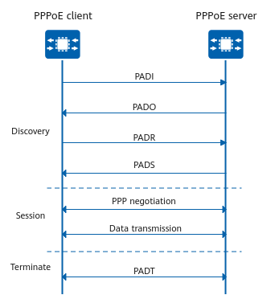

PPPoE Dial-up Implementation
PPPoE dial-up is used to establish a PPPoE session between a PPPoE client and a PPPoE server. Figure 1 shows the PPPoE dial-up process, which includes three stages: Discovery, Session, and Terminate.
Figure 1 PPPoE dial-up process
Discovery Stage
The Discovery stage consists of the following steps:
- A PPPoE client broadcasts a PPPoE Active Discovery Initiation (PADI) packet that contains the service type required by the PPPoE client.
- After receiving the PADI packet, all PPPoE servers compare the requested service with the services they can provide. The PPPoE servers that can provide the requested service unicast PPPoE Active Discovery Offer (PADO) packets to the PPPoE client.
- The PPPoE client receives PADO packets from one or more PPPoE servers. If multiple PPPoE servers reply, the PPPoE client selects the PPPoE server from which the PADO packet is received first and unicasts a PPPoE Active Discovery Request (PADR) packet to the selected PPPoE server.
- The PPPoE server generates a unique session ID to identify the PPPoE session with the PPPoE client, and then sends a PPPoE Active Discovery Session-confirmation (PADS) packet containing this session ID to the PPPoE client. When the PPPoE session is established, the PPPoE server and PPPoE client enter the PPPoE Session stage.
Session Stage
The Session stage involves PPP negotiation and PPP data transmission.
- PPP negotiation at the Session stage is the same as common PPP negotiation, which includes the Link Control Protocol (LCP), authentication, and Network Control Protocol (NCP) phases.
- In the LCP phase, the PPPoE server and PPPoE client establish and configure a data link, and verify the data link status.
- When LCP negotiation is complete, authentication starts. The authentication protocol can be Challenge Handshake Authentication Protocol (CHAP) or Password Authentication Protocol (PAP). The authentication phase ensures network security.
- After authentication succeeds, PPP enters the NCP phase. NCP is a protocol suite used to configure network-layer protocols. A commonly used network-layer protocol is IP Control Protocol (IPCP), which is used to negotiate IP addresses for users and the domain name server (DNS).
- When PPP negotiation succeeds, PPP data packets can be forwarded over the established PPP link, and PPP data transmission starts.
At the PPPoE Session stage, all Ethernet data packets are sent in unicast mode.
Terminate Stage
The communicating parties can use PPP (for example, terminate the PPP link) to terminate the PPPoE session.
If PPP cannot be used, they can use PPPoE Active Discovery Terminate (PADT) packets to terminate the PPPoE session. After a PPPoE session is established, the PPPoE client or the PPPoE server can unicast a PADT packet to terminate the PPPoE session at any time. After transmitting or receiving the PADT packet, the PPPoE server and PPPoE client are not allowed to use this session to send any PPP traffic.